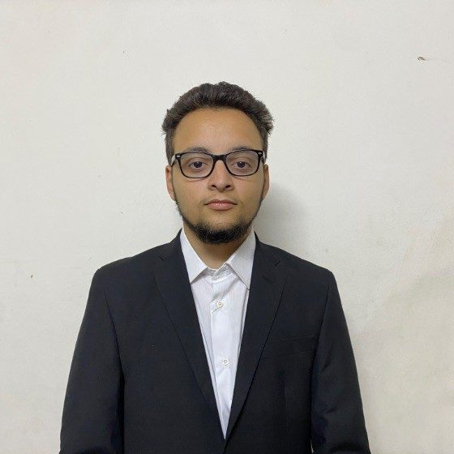

AI Engineering student · Machine Learning & Computer Vision
Practical AI, from raw MRI scans to tuned neural networks.
I'm Yousef Gamal Salem, an Artificial Intelligence Engineering student building practical AI and machine learning solutions in Python. I'm looking for an AI/ML or software engineering internship.

About
I'm a fourth-year AI Engineering student at New Ismailia National University (NINU) in Ismailia, Egypt, with an expected graduation in 2028.
My strongest work so far is in computer vision: a four-class brain MRI classifier built with EfficientNetB0 transfer learning, a custom preprocessing pipeline and Grad-CAM heatmaps that show what the model focused on. I work mainly in Python with TensorFlow, Keras and scikit-learn.
Alongside the AI work, I've built a PostgreSQL-backed Streamlit app, an AT89C51 temperature monitor, an ESP32 smart-home concept and a Cisco Packet Tracer lab network. That gives me a view of how models, data and hardware fit into a full system.
Why work with me
Four things my projects show, without inflating them.
Technical skills
Grouped by what I actually use them for.
Soft skills
Selected projects
Select a project for the problem, the approach and the tools.
Certificates
Education
On GitHub
CV
Yousef Gamal Salem
AI Engineering student at NINU (expected 2028). Python, C and SQL; CNNs, computer vision and hyperparameter optimization; TensorFlow, Keras, scikit-learn, PySwarms; PostgreSQL and Streamlit. Seeking a software engineering or AI/ML internship.
Contact
Open to AI/ML and software engineering internships. Email is the fastest way to reach me.